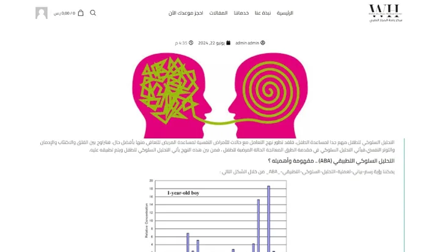

MEDICAL CONTENT WORK / CLIENT PROJECT / 2024
Wahat Al-Hijaz
Mental health articles, written to be found.
 CLIENT SITE CAPTURE
CLIENT SITE CAPTUREWahat Al-Hijaz Medical Center · Articles page, June 2024. Captured from the site while logged in; the toolbar is cropped out.
The problem
A medical center needs an articles section that gives patients clear, trustworthy information and that search engines can read well.
What I did
Prepared ten mental health articles for the center's website, on topics such as child behaviour analysis, speech disorders, emotional balance and the role of technology in mental health, and made them publish-ready. Nada edited each article, formatted it in WordPress with headings, images and a featured image, and optimised it with the Yoast SEO plugin. The site-wide meta tags were reviewed as the final step.
The approach
Use a consistent format across all ten articles: precise subtitles, a prominent featured image and relevant images inside the text. Each article was reviewed by Nada and optimised with the Yoast SEO plugin.
The result
The captures show the articles on the center's articles page in June 2024. Several of the ten are visible. No ranking, traffic or patient numbers are claimed, because none were supplied.
Evidence & scope limits
The evidence is the supplied captures of the articles page and an article page, the Word drafts, and Nada's own project description (ten articles, Yoast SEO formatting, a featured image per article, site-wide meta tag review). It does not include search results, analytics or the live site.
This entry does not claim Nada designed or built the client's website. The article images and the medical content belong to the client. No search ranking, traffic or business outcome is claimed. Private admin screens and user lists from the supplied files are not shown.
Next chapter
Search performance figures, if the client shares them, would show what the articles achieved.
Inside the work
Open any preview to see the full capture. Captures show client website content as it appeared in June 2024.
